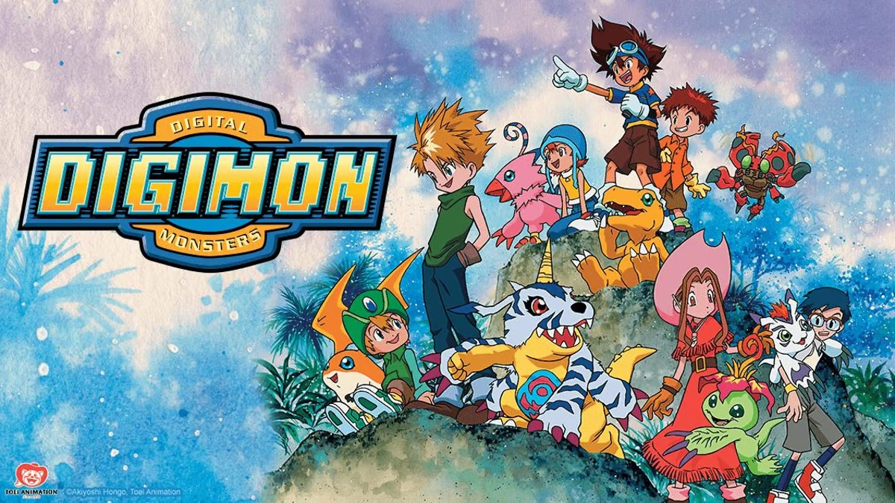
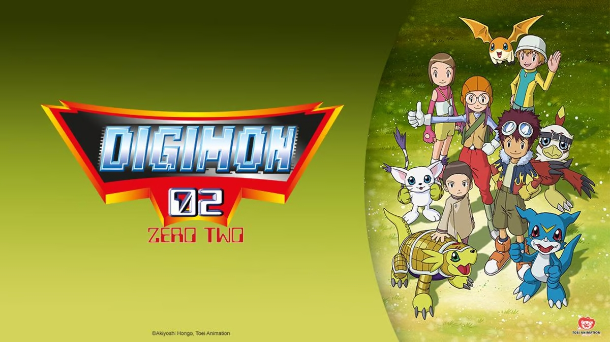
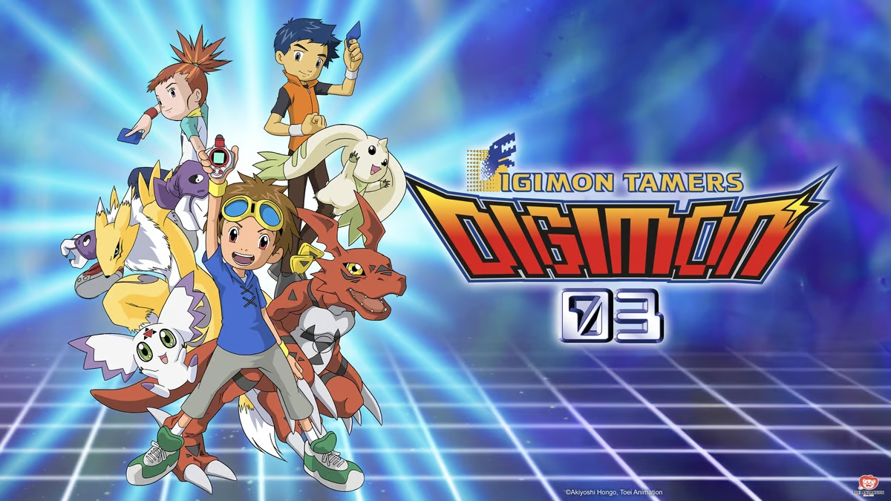
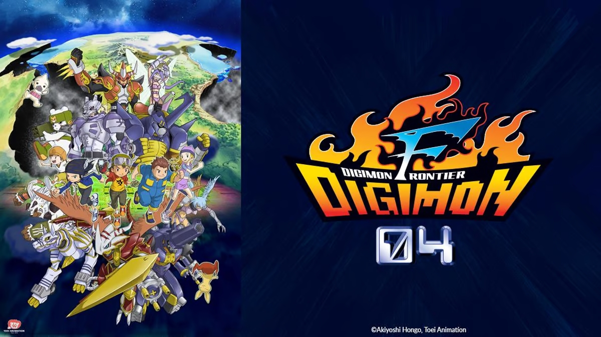

igiWiki


¡Explora el Mundo Digital como nunca antes!
Temporadas
Series de Digimon
Digimon Adventure
Trama
Un grupo de niños, los "Niños Elegidos", es transportado al Mundo Digital, donde conocen a sus Digimon compañeros. Juntos enfrentan amenazas como Devimon y Myotismon, mientras descubren el poder de sus Crestas para desbloquear digievoluciones. La serie combina aventuras, amistad y batallas épicas, culminando en la lucha contra Apocalymon para salvar ambos mundos.
Personajes Principales
- Tai Kamiya
- Matt Ishida
- Sora Takenouchi
- Izzy Izumi
- Mimi Tachikawa
- Joe Kido
- T.K. Takaishi
- Kari Kamiya
Digimons Protagonistas
Openings
Opening Castellano
Digimon Adventure 02
Trama
Años después de *Adventure*, una nueva generación de Niños Elegidos enfrenta al Emperador Digimon, quien esclaviza Digimons. Con la ayuda de T.K. y Kari, los nuevos protagonistas usan Digi-Eggs para digievoluciones armadas y descubren la digievolución DNA. La serie explora temas de legado y trabajo en equipo, con un clímax contra MaloMyotismon.
Personajes Principales
- Davis Motomiya
- Yolei Inoue
- Cody Hida
- Ken Ichijouji
- T.K. Takaishi
- Kari Kamiya
Digimons Protagonistas
Openings
Opening Castellano
Digimon Tamers
Trama
En un mundo donde Digimon es un juego de cartas, Takato crea a Guilmon, que cobra vida. Junto a Henry y Rika, enfrenta Digimons salvajes que cruzan al mundo real. La serie tiene un tono más oscuro, explorando la relación entre humanos y Digimons, y culmina en una batalla contra los D-Reaper, una amenaza digital.
Personajes Principales
- Takato Matsuki
- Henry Wong
- Rika Nonaka
- Jeri Katou
- Kazu Shioda
- Kenta Kitagawa
Digimons Protagonistas
Openings
Opening Castellano
Digimon Frontier
Trama
Un grupo de niños es convocado al Mundo Digital por un mensaje misterioso. Usando Espíritus Digimon, se transforman en Digimons para luchar contra Cherubimon y sus fuerzas. La serie destaca por su mecánica de transformación y explora temas de confianza y redención, con una batalla final contra Lucemon.
Personajes Principales
- Takuya Kanbara
- Koji Minamoto
- Zoe Orimoto
- J.P. Shibayama
- Tommy Himi
- Koichi Kimura